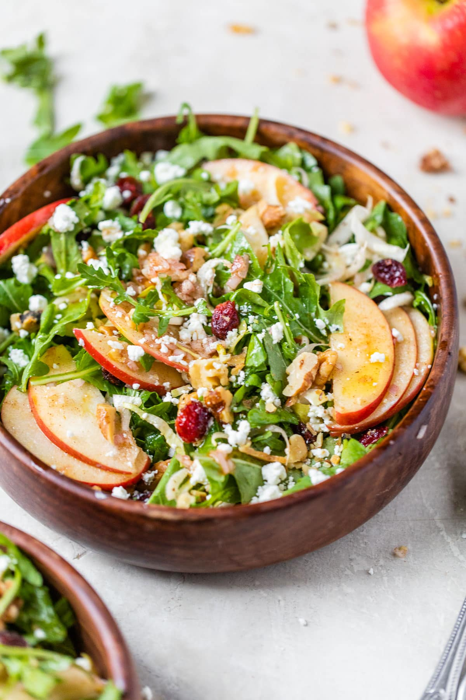

Apple Walnut Salad

Oh, Snap! Apple Walnut Salad recipe
This memorable, beautiful salad might feel fancy, but it's actually super easy to prepare!
Ingredients
- Arugula - A member of the Brassica family, arugula is a delicious green with its own unique flavor. It's
tender and has a slightly peppery taste that adds wonderful flavor to salads like this one.
- Belgian Endive - While there are a few varieties of endive, you'll want to use Belgian endive specifically
for this recipe. It resembles a small head of lettuce with light yellow leaves. Refreshingly crisp and mildly
bitter, it is a welcome counterpart to both the apples and arugula.
- Apples - The apples soak up the scrumptious dressing flavor and add a wonderful juicy crunch to the salad.
Honeycrisp apples are a great option, just like in Grape Salad.
- Dried Cranberries - With their chewy texture, sweet flavor, and festive color, dried cranberries are an exceptional
addition for both elegance and taste.
- Blue Cheese - A classic pairing with apple and walnut, blue cheese is a perfect fit here. For something mild, use
gorgonzola; for something stronger, look for Cabrales (a Spanish blue cheese) or Roquefort (which is French).
Not into blue cheese? Feta and goat cheese both work well.
- Nuts - Freshly toasted walnuts make all the difference in the world.
- Maple Cinnamon Dressing - A little sweet, a little tangy, and a lot delicious (especially with the apples!).
Be sure to add it gradually so that you don't accidentally overdress the salad.
Directions
- Toast and chop the walnuts.
- Whisk the dressing ingredients together. Stir in the apples.
- Place the arugula and endive in a bowl.
- Add part of the cranberries, cheese, and walnuts.
- Transfer the apples to the bowl with the greens. Toss to coat. Continue to add the dressing until
the salad is moist.
- Finish with the remaining toppings and toss. ENJOY!